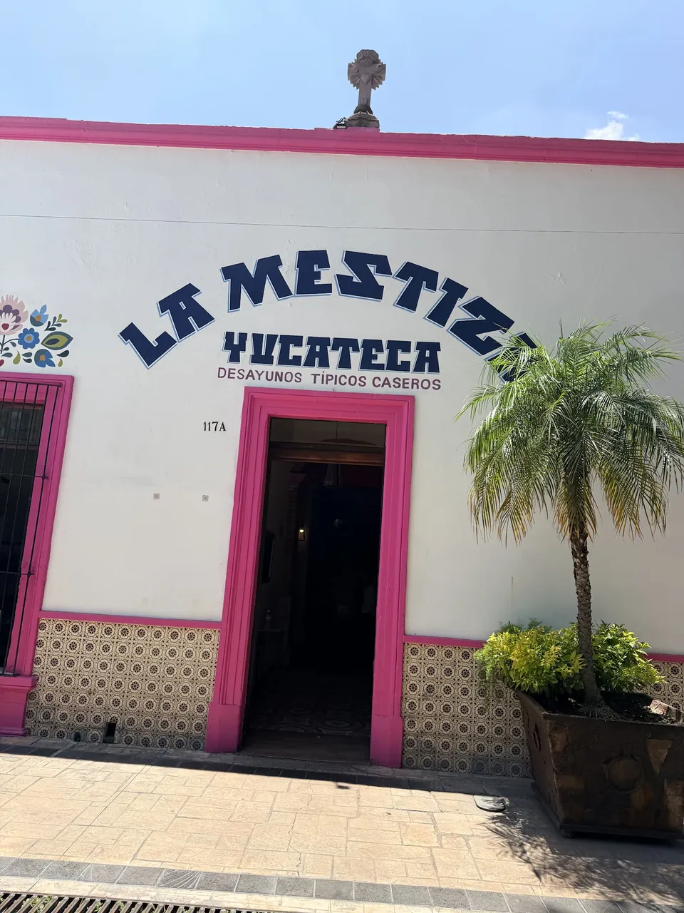
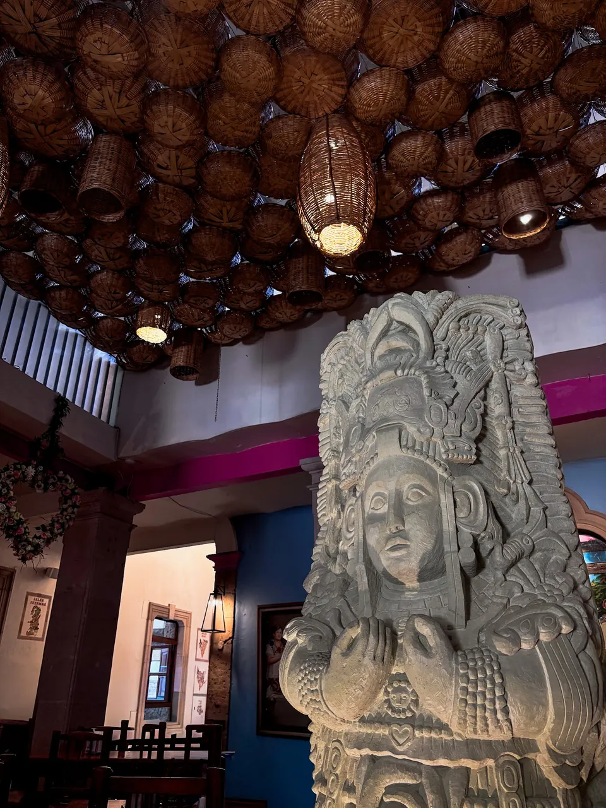
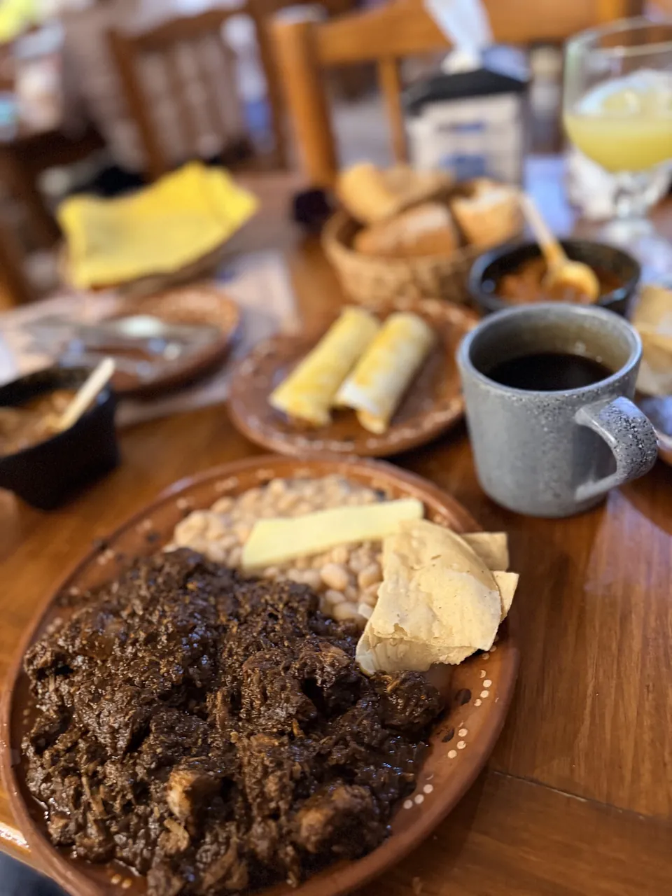
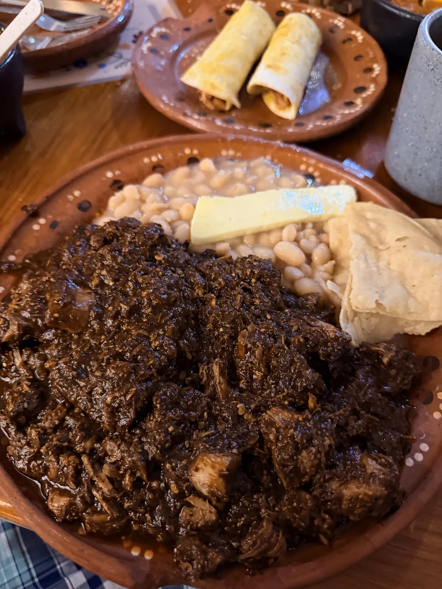
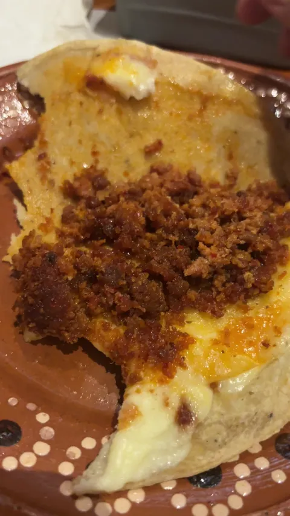
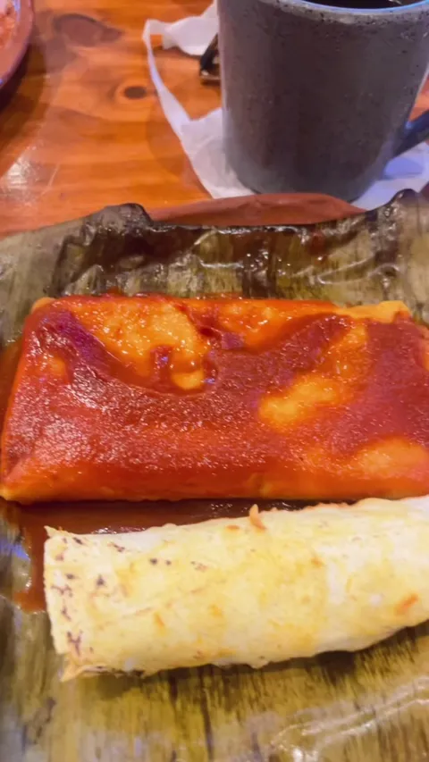
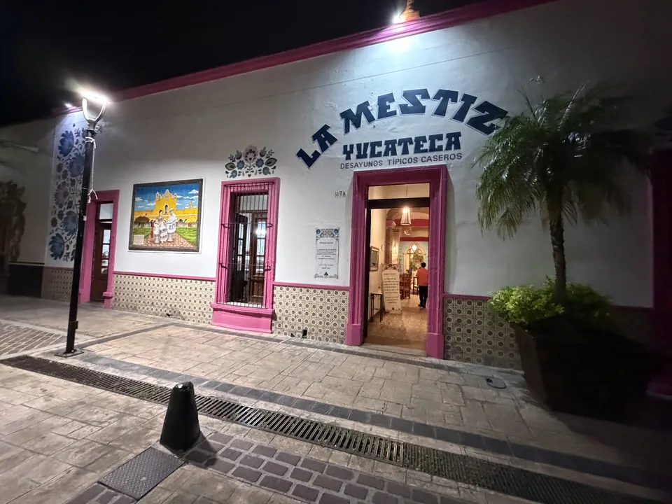
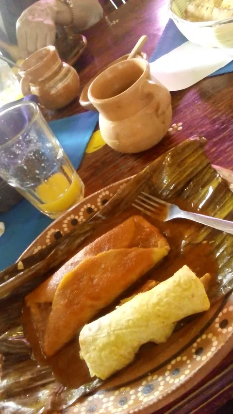
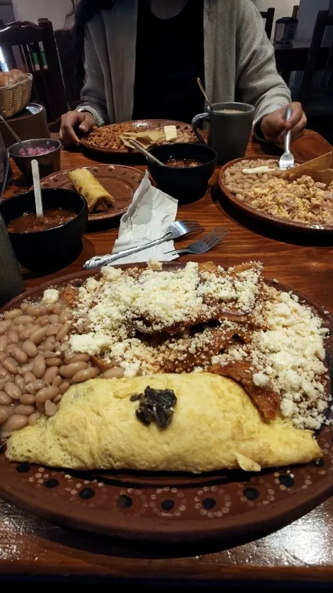

Abasolo 117Desayunos y típicos caseros
Yucatánen el Encino.
Cochinita, tamales y café de olla en jarro de barro. Barrio del Encino, Aguascalientes.
Como en la lotería
Marcatu desayuno.
Toca lo que se te antoja y mándanos tu tabla por WhatsApp.

Patio.Vigas.Barro.
Pásale a ver el lugar ↓
Lo que hay de comer
La cartade la casa.
Lo que más nombra la gente en Google. Precios de la carta en mesa, por orden.
Lo que dice la gente
Lo dicencon la boca llena.
“Primer cochinita pibil que pruebo en Ags. que sabe a cochinita pibil yucateca.”
“Un lugar casero, agradable, para desayunar delicioso y sin exceso de costos. El sabor de la comida 10/10.”
“Un lugar familiar con tradición en Aguascalientes con identidad yucateca. Platillos bien servidos y precios razonables.”
“Nos encantó el lugar muy cómodo agradable, su café de hoya, sus alimentos muy bastos.”
“Comida Yucateca deliciosa, todo lo que pidas. El servicio de los meseros de lujo.”
“Bello restaurante: Comida deliciosa y el restaurante tiene elementos que representan la cultura maya.”
“Si te gusta la comida yucateca este es un imperdible. El precio es muy razonable.”
“El lugar es estéticamente impecable; el Barrio del Encino siempre es un gusto de visitar.”
“El sazón es excelente.”
Pásale a la mesa
Todo llegaen barro.






Patio con vigas, escultura maya y loza de barro. Ven con la familia.
Cómo llegar ↓Barrio del Encino
Abasolo 117.Aquí te esperamos.
Abasolo 117, Barrio del Encino, 20240 Aguascalientes, Ags.
Todos los días de 8:00 a 13:30
- Lunes8:00 a 13:30
- Martes8:00 a 13:30
- Miércoles8:00 a 13:30
- Jueves8:00 a 13:30
- Viernes8:00 a 13:30
- Sábado8:00 a 13:30
- Domingo8:00 a 13:30
Comer aquí, para llevar o a domicilio.
Así de fácil
Así se pideen La Mestiza.
- 1
Marca tu tabla
Toca los platillos que se te antojan y ponles su frijol.
- 2
Mándala por WhatsApp
Llega escrita con lo que marcaste y la suma de lo que trae precio.
- 3
Comes aquí o pasas por ella
En el patio, para llevar o a domicilio. Tú dinos.
Lo que siempre preguntan
Entre $100 y $200, según la gente que lo cuenta en Google. Un tamal yucateco cuesta $52 y los huevos motuleños $112.
Sí. Puedes comer aquí, llevarte tu pedido o pedirlo a domicilio. Escríbenos por WhatsApp y te confirmamos.
Todos los días de 8:00 a 13:30. Si llegas temprano, el café de olla ya está en el jarro.
Cochinita pibil, café de olla y huevos motuleños: son los tres platillos que más nombra la gente en Google.
Sí. Patio con vigas, ambiente tranquilo y el Jardín del Encino a unos pasos para pasear al salir.
Abasolo 117, Barrio del Encino, 20240 Aguascalientes. Ver el mapa ↑
Para el dueño
Todo listopara completar.
Pásanoslo por el mismo chat donde te llegó esta muestra.
- Tu WhatsApp para pedidos
- El horario de platillos fuertes después de las 2 p.m.
- Precios de café de olla, sopa de lima, panuchos y pan de elote
- Tus redes (Instagram y Facebook) para el pie
- Fotos propias del local y los platillos